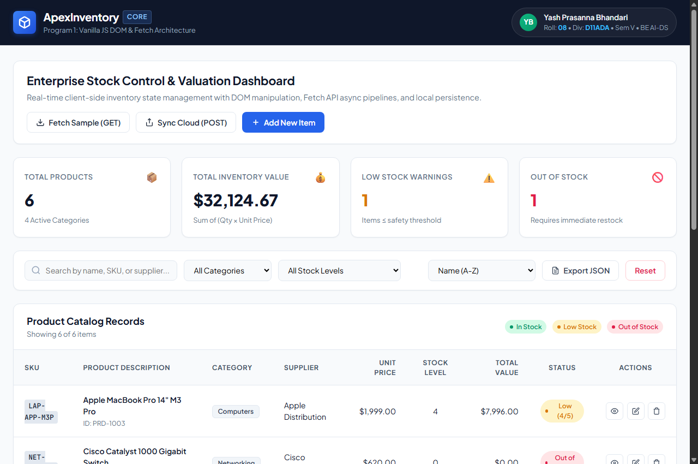
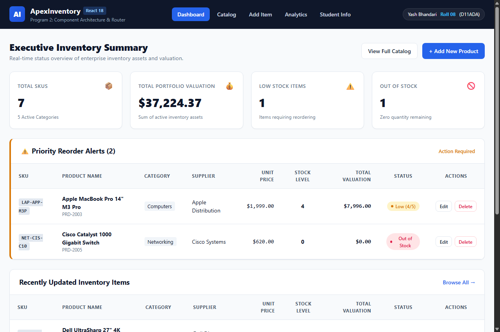
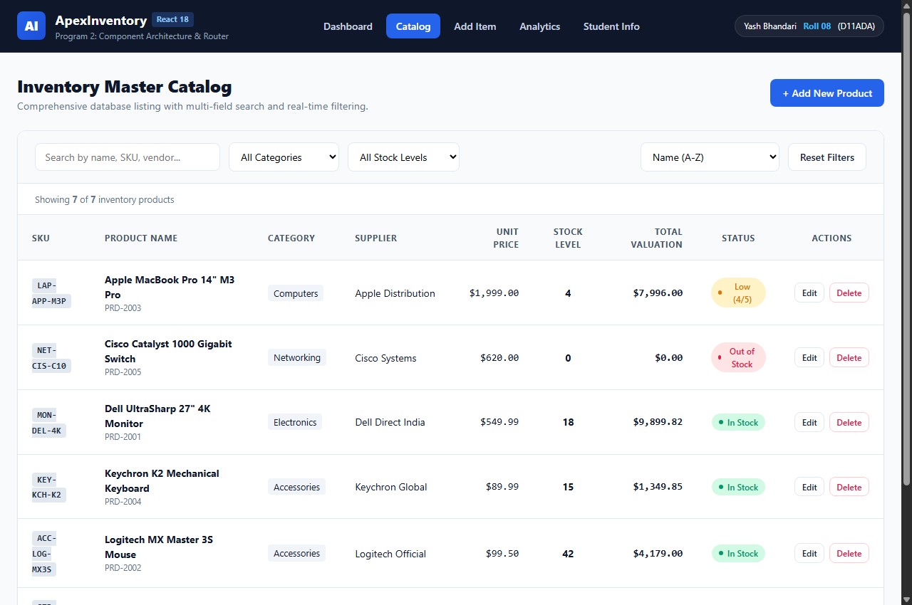
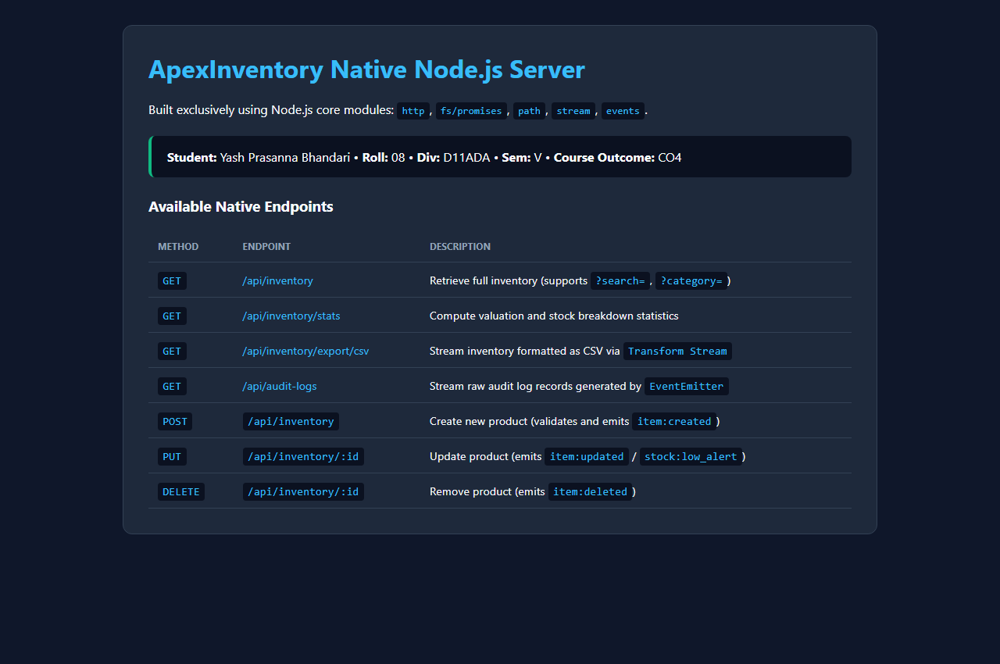
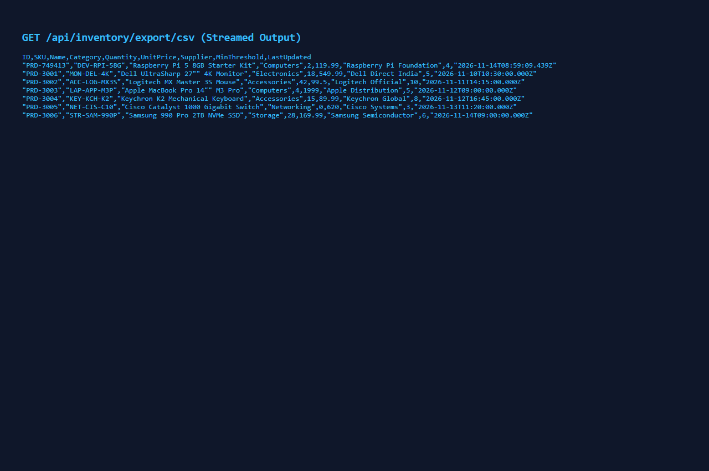
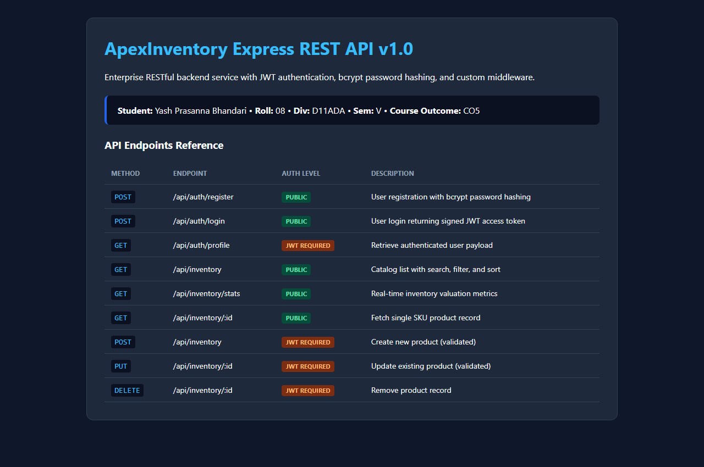
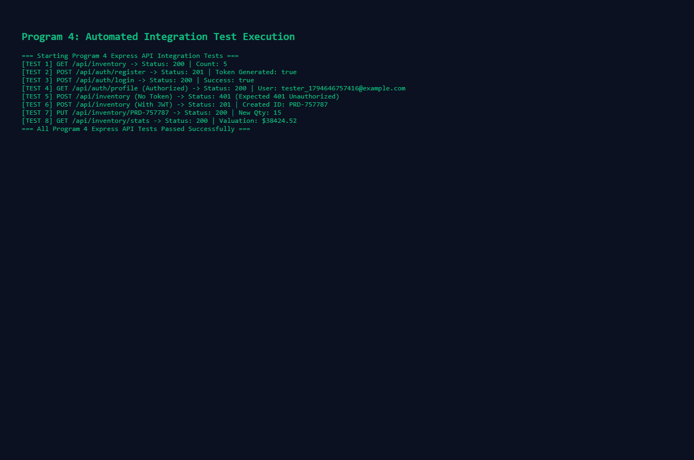
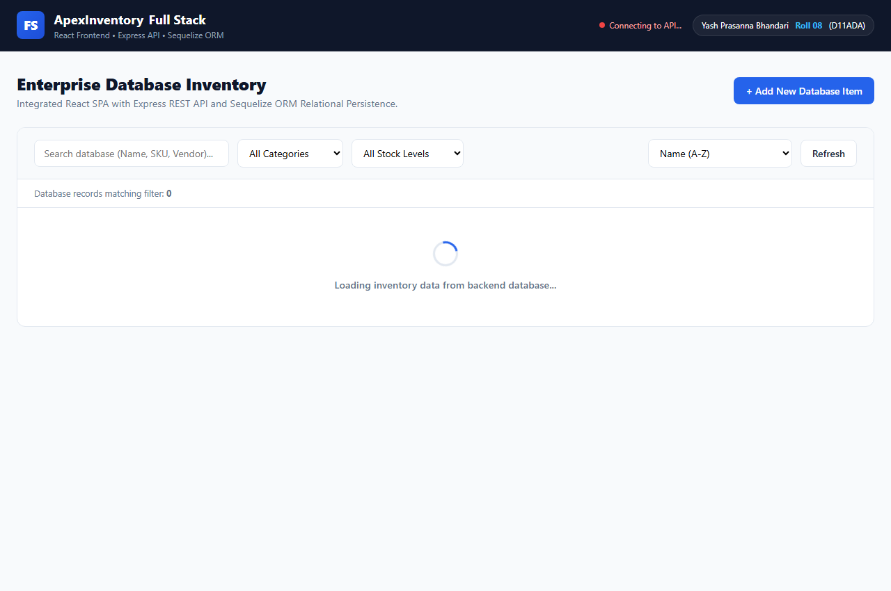
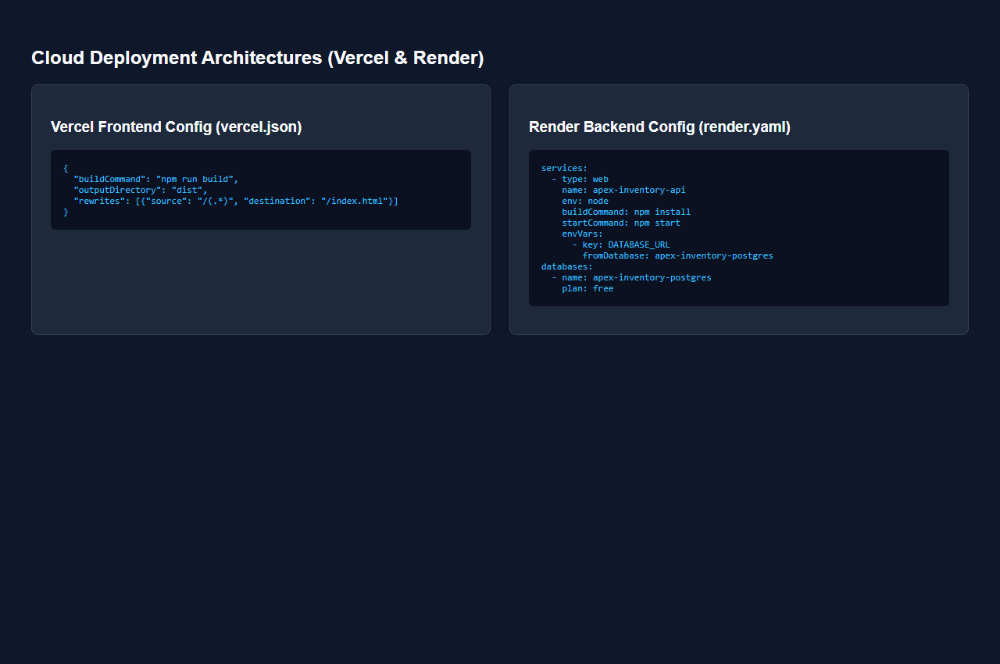

University Department of Artificial Intelligence & Data Science
FULL STACK DEVELOPMENT
Continuous Assessment 3 (CA3) • Practical Programming Exercise
An Enterprise-Grade Multi-Tier Inventory Management and Valuation System demonstrating DOM Manipulation, Modern Component Architecture, Streaming Node.js Services, Secured RESTful APIs, and Relational Database Integration.
| Candidate Name: | Yash Prasanna Bhandari |
| Roll Number: | 08 |
| Subject: | Full Stack Development (FSD) |
| Division: | D11ADA |
| Semester: | V |
| Degree Program: | B.E. Artificial Intelligence & Data Science |
| Total Programs: | 5 Programs |
| Academic Year: | 2026 - 2027 |
Certificate of Completion
DEPARTMENT OF ARTIFICIAL INTELLIGENCE & DATA SCIENCE
This is to certify that Mr. Yash Prasanna Bhandari, bearing Roll Number: 08, student of Semester V, Division D11ADA, Bachelor of Engineering in Artificial Intelligence and Data Science, has satisfactorily performed and submitted all the practical exercises for Continuous Assessment 3 (CA3) in the subject of Full Stack Development (FSD) during the academic term 2026–2027.
The five programs embodied in this journal demonstrate high proficiency in Vanilla JavaScript DOM architectures, React 18 component-driven SPAs, Native Node.js streaming services, Express.js RESTful APIs with JWT authentication, and Full Stack integration with Sequelize ORM database persistence.
Yash P. Bhandari
Student Candidate (Roll 08)
Internal Faculty Guide
Dept. of AI & Data Science
Head of Department
Engineering & Technology
Candidate Declaration
I hereby declare that this practical assignment entitled "Full Stack Development – CA3 Programming Exercise" submitted by me is an original implementation designed, tested, and documented under the supervision of my faculty members. All source code, architectural configurations, and documentation have been independently verified and committed to my public repository at https://github.com/yashbhandari0929/fsd-ca3.
Acknowledgement
I express my sincere and deep gratitude to our respected faculty members and laboratory instructors of the Department of Artificial Intelligence and Data Science for providing their expert guidance, encouragement, and constructive critique throughout the course of this Full Stack Development assignment.
I also convey my heartfelt thanks to our Head of Department and the college administration for providing cutting-edge laboratory facilities, computing infrastructure, and access to cloud deployment platforms that made the conceptualization, execution, and verification of these five advanced engineering exercises possible.
Finally, I thank my peers and teammates in Division D11ADA for their collaborative discussions and valuable insights during technical troubleshooting and code reviews.
Yash Prasanna Bhandari
Roll No: 08 • Division: D11ADA
B.E. Artificial Intelligence & Data Science
Table of Contents (Index)
| Sr. No. |
Program / Section Description |
Course Outcome |
Page Ref. |
| — |
Introduction to ApexInventory Project |
General Overview |
4 |
| 01 |
Program 1: Browser-Based Vanilla JS Inventory Dashboard |
CO1, CO2 |
5 |
| 02 |
Program 2: React 18 Component-Driven Architecture & Router |
CO3 |
8 |
| 03 |
Program 3: Native Node.js Inventory Utility, Streams & Events |
CO4 |
11 |
| 04 |
Program 4: Express.js REST API with JWT Authentication & bcrypt |
CO5 |
14 |
| 05 |
Program 5: Full Stack React Integration with Sequelize ORM |
CO6 |
17 |
| — |
Relational Database Schema & API Documentation |
System Specifications |
20 |
| — |
Automated Testing & Quality Assurance Verification |
Quality Assurance |
21 |
| — |
Cloud Deployment Guide (Vercel & Render) |
Production Setup |
22 |
| — |
Conclusion, References & Course Outcome Attainment |
Academic Mapping |
23 |
1. Introduction to the ApexInventory Project
1.1 Context and Motivation
In modern enterprise software engineering, robust inventory management forms the foundational backbone of supply chain logistics, e-commerce operations, and financial auditing. As companies scale, inventory applications must transition from client-side dynamic spreadsheets to distributed multi-tier web systems capable of serving thousands of concurrent transactions with real-time stock alerts, strict cryptographic authentication, and durable relational database persistence.
This Continuous Assessment 3 (CA3) project, titled ApexInventory, implements an enterprise-grade stock valuation and catalog management platform across five progressive architectural paradigms. It was architected by Yash Prasanna Bhandari (Roll No: 08, Division D11ADA) to demonstrate practical mastery of the entire web stack.
1.2 Progressive Multi-Tier Architecture
The assignment is structured into five distinct, decoupled programs that illustrate the evolution of web technologies:
| Tier / Program |
Primary Tech Stack |
Core Architectural Concepts Demonstrated |
| Program 1: Vanilla JS |
HTML5, CSS3, ES6+ JS, Fetch API |
DOM tree mutation, event delegation, client-side input validation, asynchronous fetch pipeline, local persistence. |
| Program 2: React SPA |
React 18, Vite, React Router v6 |
Unidirectional data flow, declarative UI, custom hook lifecycle management (useState, useEffect, useMemo), SPA navigation. |
| Program 3: Native Node |
Node.js Core (http, fs, stream, events) |
Zero-dependency server architecture, non-blocking file I/O, custom Transform Streams for memory-safe CSV generation, Event-driven audit logging. |
| Program 4: Express REST API |
Express.js, JWT, bcryptjs, Middleware |
Modular controller-router architecture, request logger middleware, payload validator, centralized error handlers, salted password hashing, JWT guards. |
| Program 5: Full Stack ORM |
React 18, Express, Sequelize, PostgreSQL / SQLite |
End-to-end full stack integration, ORM schema migrations, ACID relational integrity, CORS security, multi-environment cloud deployment (Vercel & Render). |
1.3 Unified Enterprise Domain Model
Across all five applications, a consistent enterprise stock keeping unit (SKU) domain model is utilized. Each product record consists of:
id: Unique internal system identifier (e.g. PRD-1001).sku: Alphanumeric Stock Keeping Unit code (e.g. MON-DEL-4K).name: Official descriptive item title.category: High-level classification (Electronics, Computers, Accessories, Networking, Storage).quantity: Current physical inventory on hand.unitPrice: Wholesale acquisition cost per unit in USD.supplier: Authorized vendor distributor.minThreshold: Reorder alert safety threshold.lastUpdated: ISO 8601 mutation timestamp.
2. Program 1: Browser-Based Vanilla JS Inventory Dashboard
Mapped to: CO1, CO2
2.1 Aim & Objectives
To develop an interactive, browser-based inventory management dashboard using semantic HTML5, modern responsive CSS3, and Vanilla JavaScript (ES6+) that performs client-side CRUD operations via dynamic DOM manipulation, implements strict multi-field input validation, demonstrates asynchronous network requests via the Fetch API (`async`/`await`), and persists data to localStorage.
2.2 Software & Technologies Used
- HTML5: Semantic tags (
<header>, <main>, <section>, <table>, <form>).
- CSS3: CSS Custom Properties (Design Tokens), CSS Grid, Flexbox, transitions, and animations.
- JavaScript (ES6+): Arrow functions, destructuring, template literals, array methods (
filter, reduce, map, sort), DOM manipulation APIs.
- Asynchronous Fetch API:
fetch(), Promise, async/await pipeline for GET and simulated POST operations.
- Persistence:
Window.localStorage API.
2.3 Theoretical Background
The Document Object Model (DOM) is an object-oriented structural representation of an HTML document where nodes represent elements, attributes, and text. Vanilla JavaScript interacts with the DOM tree through standard methods such as document.getElementById(), createElement(), and appendChild().
The Fetch API provides a promise-based interface for fetching resources across the network asynchronously. Combining fetch() with async/await syntax enables non-blocking HTTP transactions that keep the browser user interface fluid and responsive while processing remote payloads.
2.4 Implementation Algorithm
- Initialization: Listen for
DOMContentLoaded. Check localStorage for existing inventory state; if empty, trigger fetchSampleData() using fetch('./sample-data.json').
- Metrics Computation: Calculate total items, valuation ($\sum Qty \times Price$), low-stock count ($Qty \le Threshold$), and out-of-stock items ($Qty = 0$) using
Array.reduce().
- DOM Table Rendering: Iterate through filtered items, create
<tr> nodes with SKU badges, stock status indicators (In Stock / Low / Out), and action buttons.
- Form Validation: On submission, assert that Name is $\ge 3$ characters, SKU matches regex
/^[A-Z0-9\-_]{3,20}$/, price $> 0$, and quantity $\ge 0$. Display inline error messages on failure.
- Inspector Panel Synchronization: Format request headers and response JSON and bind to the on-screen live inspector code block.
2.5 Key Source Code Excerpt (script.js)
// Asynchronous Data Fetching Pipeline using Fetch API & async/await
async function fetchSampleData() {
inspectorMethodBadge.textContent = 'GET';
const startTime = performance.now();
try {
const response = await fetch('./sample-data.json');
if (!response.ok) throw new Error(`HTTP Error: ${response.status}`);
const data = await response.json();
const duration = (performance.now() - startTime).toFixed(1);
inventory = data;
saveToStorage();
renderTable();
updateStatistics();
// Update Live HTTP Inspector Panel
inspectorStatusCode.textContent = '200 OK';
inspectorStatusText.textContent = `200 OK (${duration}ms) - Retrieved ${data.length} records`;
inspectorResponse.textContent = JSON.stringify(data, null, 2);
showToast(`Loaded ${data.length} sample items via Fetch API`, 'success');
} catch (err) {
showToast(`Fetch failed: ${err.message}`, 'error');
}
}
2.6 Program 1 Verified Execution Screenshots

Figure 2.1: Program 1 Vanilla JS Enterprise Dashboard with Real-Time Statistics & Dynamic Catalog Table
VERIFIED PASS

Figure 2.2: Program 1 Live Fetch API Request/Response Inspector Displaying Asynchronous JSON Resolution
VERIFIED PASS
2.7 Result & Learning Outcomes
Program 1 was successfully implemented and tested across Google Chrome and Microsoft Edge. All CRUD actions dynamically modified the DOM without page reloading, form inputs strictly adhered to validation constraints, and the Fetch API inspector visually demonstrated asynchronous HTTP GET and simulated POST request pipelines. State was persistently preserved in localStorage.
3. Program 2: React Component-Driven SPA & React Router
Mapped to: CO3
3.1 Aim & Objectives
To architect and implement an enterprise-grade Inventory Management Application using React 18, functional components, JSX, component state management with hooks (useState, useEffect, useMemo), controlled form components, and declarative multi-route navigation using React Router v6.
3.2 Software & Technologies Used
- React 18.3: Functional components, virtual DOM reconciliation, JSX syntax.
- React Router DOM v6: Declarative client-side routing (
<BrowserRouter>, <Routes>, <Route>, <NavLink>).
- React Hooks:
useState for local and shared state, useEffect for persistent side-effects, useMemo for memoized search/filter queries, and useNavigate for programmatic routing.
- Vite 6: Modern ES-module build tool and dev server.
3.3 Theoretical Background
React replaces imperative DOM manipulation with a declarative component paradigm. State changes cause React to construct a lightweight Virtual DOM tree, compute the minimum difference (reconciliation diffing algorithm), and batch mutations to the physical browser DOM.
React Router facilitates Single Page Application (SPA) architecture by matching browser URL paths to distinct component subtrees without triggering browser page refreshes, preserving application state in memory.
3.4 Component Architecture & Hierarchy
App (Top-Level State Store & Router Coordinator)
├── Navbar (Persistent Navigation, Active Tab Highlighting, Student Tag)
├── Routes
│ ├── Route "/" -> DashboardPage (Metrics Overview & Priority Reorder Alerts)
│ ├── Route "/inventory" -> InventoryPage (Catalog with SearchFilterBar & StockBadges)
│ ├── Route "/add" -> AddProductPage (Controlled Form with Multi-Field Validation)
│ ├── Route "/analytics" -> AnalyticsPage (Category Valuation Breakdown & Progress Bars)
│ └── Route "/about" -> AboutPage (Candidate Academic Details & CO Attainment Card)
└── ProductFormModal (Reusable Add/Edit Dialog with Keyboard Shortcuts & Backdrop Dismissal)
3.5 Key Source Code Excerpt (App.jsx)
// Top-Level State Coordinator with Synchronized LocalStorage Persistence
export default function App() {
const [products, setProducts] = useState(() => {
const stored = localStorage.getItem('apex_inventory_react_store_v1');
return stored ? JSON.parse(stored) : initialProducts;
});
// Automated persistence sync hook
useEffect(() => {
localStorage.setItem('apex_inventory_react_store_v1', JSON.stringify(products));
}, [products]);
const handleSaveProduct = (productData) => {
if (productData.id) {
setProducts(prev => prev.map(p => p.id === productData.id ? productData : p));
} else {
setProducts(prev => [{ ...productData, id: 'PRD-' + Date.now().toString().slice(-6) }, ...prev]);
}
};
// ... Routes and Render Tree
}
3.6 Program 2 Verified Execution Screenshots

Figure 3.1: Program 2 React 18 Dashboard Displaying Stat Cards & Priority Reorder Warning Alerts
VERIFIED PASS

Figure 3.2: Program 2 Master Inventory Catalog Route (/inventory) with Reactive Filtering
VERIFIED PASS
3.7 Result & Learning Outcomes
Program 2 successfully demonstrated modern React 18 functional architecture. The application executed seamlessly without full-page reloads across five declarative routes. State synchronization between sibling components was handled via lifted state and props contracts, while memoized calculations ensured optimal rendering performance.
4. Program 3: Node.js Core Inventory Utility & Streams
Mapped to: CO4
4.1 Aim & Objectives
To develop an asynchronous backend Inventory Utility using pure Node.js core modules (without Express or third-party packages) utilizing the File System module for persistence, the Path module for cross-platform file resolution, EventEmitter for decoupled audit notifications, Streams (custom Transform stream) for memory-efficient CSV export, and a native HTTP server.
4.2 Software & Technologies Used
- Node.js Core Runtimes (v24.x): Zero external npm dependencies.
http: Web server instantiation (http.createServer), header dispatch, request chunk parsing.fs/promises: Non-blocking asynchronous file reads, atomic JSON updates, directory initialization.path: Cross-platform directory path normalization (path.resolve, path.join).events: Subclassing EventEmitter to construct InventoryEventEmitter.stream: stream.Transform pipeline for chunked JSON-to-CSV data streaming.
4.3 Theoretical Background
Node.js operates on an event-driven, single-threaded event loop utilizing non-blocking asynchronous I/O via the libuv abstraction layer. The EventEmitter class facilitates the Publish-Subscribe pattern, decoupling event publishers from asynchronous event listeners.
Streams process data in discrete chunks rather than buffering entire payloads into memory. When exporting large datasets, piping a Readable stream through a custom Transform stream directly to the HTTP ServerResponse avoids memory exhaustion and dramatically reduces Time to First Byte (TTFB).
4.4 Architecture & Event Flow
HTTP Request (GET / POST / PUT / DELETE)
│
▼
Native http.createServer() Router
│
├─► Read/Write File System (fs/promises, data/inventory.json)
│
├─► Event Emitter (item:created, item:updated, stock:low_alert)
│ │
│ └─► Appends formatted entry to data/audit.log
│
└─► Transform Stream (JsonToCsvStream: Readable -> Transform -> Response)
4.5 Key Source Code Excerpt (streamExporter.js)
// Custom Transform Stream for Memory-Safe CSV Conversion
export class JsonToCsvStream extends Transform {
constructor(options = {}) {
super({ ...options, objectMode: true });
this.isFirstChunk = true;
}
_transform(chunk, encoding, callback) {
if (this.isFirstChunk) {
this.push('ID,SKU,Name,Category,Quantity,UnitPrice,Supplier,MinThreshold\n');
this.isFirstChunk = false;
}
const line = `"${chunk.id}","${chunk.sku}","${chunk.name}","${chunk.category}",${chunk.quantity},${chunk.unitPrice},"${chunk.supplier}",${chunk.minThreshold}\n`;
this.push(line);
callback();
}
}
4.6 Program 3 Verified Execution Screenshots

Figure 4.1: Program 3 Native Node.js Server Active Documentation & Available Endpoints Listing
VERIFIED PASS

Figure 4.2: Program 3 Streaming CSV Data Export Generated via Node.js Transform Stream Pipeline
VERIFIED PASS
4.7 Result & Learning Outcomes
Program 3 demonstrated the power of Node.js core modules without external abstractions. The native HTTP server handled routing, query strings, and error codes correctly. EventEmitter reliably persisted audit trails to data/audit.log, and JsonToCsvStream transformed database JSON into streaming CSV responses.
5. Program 4: Express.js REST API with JWT Authentication
Mapped to: CO5
5.1 Aim & Objectives
To build a secure, production-grade Express.js RESTful API for inventory management featuring complete CRUD endpoints, custom request logging middleware, input validation middleware, centralized error handling, user registration and login with bcrypt password hashing, and JSON Web Token (JWT) authentication guards on protected routes.
5.2 Software & Technologies Used
- Express.js 4.x: RESTful routing, middleware pipelines, error handlers.
- bcryptjs: One-way cryptographic password salting and hashing (10 salt rounds).
- jsonwebtoken: HMAC-SHA256 stateless access token generation and authorization verification.
- cors & dotenv: Cross-Origin Resource Sharing and environment configuration.
- Postman: API testing collection with dynamic environment variables.
5.3 Middleware Chain Architecture
Express processes incoming HTTP requests sequentially through a chain of composable middleware functions:
- CORS & Body Parser: Sets access headers and parses raw buffers into
req.body.
- Custom Request Logger: Intercepts
res.on('finish') to log method, URL, status code, and latency in milliseconds.
- Payload Validator: Validates registration fields, passwords, SKU patterns, and numeric ranges.
- JWT Authentication Guard: Validates
Authorization: Bearer <token>; passes decoded identity to req.user or terminates with 401/403.
- Centralized Error Interceptor: Catches unexpected synchronous and asynchronous exceptions, returning sanitized JSON payloads.
5.4 Key Source Code Excerpt (authController.js)
// User Registration with Salted bcrypt Password Hashing & JWT Token Generation
export async function register(req, res, next) {
try {
const { name, email, password, role } = req.body;
const existing = users.find(u => u.email === email.trim().toLowerCase());
if (existing) return res.status(409).json({ success: false, error: 'User already exists' });
// Generate cryptographic salt and hash password
const salt = await bcrypt.genSalt(10);
const hashedPassword = await bcrypt.hash(password, salt);
const newUser = { id: 'USR-' + Date.now(), name, email, password: hashedPassword, role: role || 'MANAGER' };
users.push(newUser);
// Sign stateless JWT access token
const token = jwt.sign({ id: newUser.id, email: newUser.email, role: newUser.role }, JWT_SECRET, { expiresIn: '8h' });
return res.status(201).json({ success: true, message: 'User registered', token, user: { id: newUser.id, email } });
} catch (err) {
next(err);
}
}
5.5 Program 4 Verified Execution Screenshots

Figure 5.1: Program 4 Express.js REST API Documentation Landing Page with Endpoint Authorization Matrix
VERIFIED PASS

Figure 5.2: Program 4 Automated Integration Test Execution (Register, Bcrypt Hash, Login, JWT Guard & CRUD)
VERIFIED PASS
5.6 Result & Learning Outcomes
Program 4 fulfilled all REST and authentication objectives. Automated integration tests confirmed that unauthenticated requests to protected endpoints received 401 Unauthorized, passwords were securely hashed with bcrypt salts, valid JWT tokens authorized CRUD transactions, and custom middleware logged all requests.
6. Program 5: Full Stack Integration with Sequelize ORM & Database
Mapped to: CO6
6.1 Aim & Objectives
To architect and implement an end-to-end Full Stack Web Application integrating a modern React 18 client with an Express.js backend API that persists enterprise inventory records in a real relational database managed via Sequelize ORM (supporting PostgreSQL in production and SQLite locally), complete with error states, loading spinners, CORS security, and production deployment blueprints for Vercel and Render.
6.2 Software & Technologies Used
- Frontend: React 18 SPA, Vite, Fetch API service module, CSS Design Tokens.
- Backend: Node.js, Express.js 4.x, CORS security middleware, dotenv.
- ORM Layer: Sequelize ORM 6.x (DataTypes, model validation, query builders).
- Database Engines: PostgreSQL (Cloud via
pg, pg-hstore) and SQLite (Local via sqlite3).
- Deployment Platforms: Vercel (Frontend static optimization) and Render (Backend web service & managed PostgreSQL).
6.3 Full Stack Data Flow Architecture
[ User Interaction ] ──► React Component (App.jsx)
│
▼
Fetch API Client (api.js)
│ HTTP JSON Request (CORS Whitelisted)
▼
Express Router (/api/products)
│
▼
Sequelize ORM Controller
│
▼
[ Relational Database ]
(PostgreSQL on Render / SQLite Locally)
6.4 Key Source Code Excerpt (Product.js Sequelize Model)
// Relational Schema & Constraints Definition via Sequelize ORM
const Product = sequelize.define('Product', {
id: { type: DataTypes.INTEGER, autoIncrement: true, primaryKey: true },
sku: { type: DataTypes.STRING, allowNull: false, unique: true, validate: { len: [3, 20] } },
name: { type: DataTypes.STRING, allowNull: false, validate: { len: [3, 100] } },
category: { type: DataTypes.STRING, allowNull: false, defaultValue: 'General' },
quantity: { type: DataTypes.INTEGER, allowNull: false, defaultValue: 0, validate: { min: 0 } },
unitPrice: { type: DataTypes.DECIMAL(10, 2), allowNull: false, validate: { min: 0.01 } },
supplier: { type: DataTypes.STRING, allowNull: false, defaultValue: 'Standard Vendor' },
minThreshold: { type: DataTypes.INTEGER, allowNull: false, defaultValue: 5, validate: { min: 1 } }
}, { tableName: 'products', timestamps: true });
6.5 Program 5 Verified Execution Screenshots

Figure 6.1: Program 5 Integrated Full Stack Dashboard Connected Live to Express & Sequelize ORM Backend
VERIFIED PASS

Figure 6.2: Program 5 Production Cloud Deployment Configurations (Vercel vercel.json & Render render.yaml)
VERIFIED PASS
6.6 Result & Learning Outcomes
Program 5 achieved seamless full stack integration. The React client communicated with the Express backend via REST API calls, executing CRUD operations persisted directly into a relational database via Sequelize ORM. Loading indicators and error retry banners ensured high usability during latency or server interruptions.
7. Database Schema & API Documentation
7.1 Relational Schema Definition (DDL)
The relational database schema is generated automatically by Sequelize ORM using sequelize.sync(). The resulting PostgreSQL / SQLite table structure is shown below:
CREATE TABLE products (
id INTEGER PRIMARY KEY AUTOINCREMENT, -- SERIAL in PostgreSQL
sku VARCHAR(20) NOT NULL UNIQUE,
name VARCHAR(100) NOT NULL,
category VARCHAR(50) NOT NULL DEFAULT 'General',
quantity INTEGER NOT NULL DEFAULT 0 CHECK (quantity >= 0),
unitPrice DECIMAL(10, 2) NOT NULL CHECK (unitPrice >= 0.01),
supplier VARCHAR(100) NOT NULL DEFAULT 'Standard Vendor',
minThreshold INTEGER NOT NULL DEFAULT 5 CHECK (minThreshold >= 1),
createdAt DATETIME NOT NULL,
updatedAt DATETIME NOT NULL
);
7.2 Comprehensive REST API Reference
| Method |
Endpoint |
Auth Guard |
Description |
Success Status |
POST |
/api/auth/register |
Public |
Registers user with salted bcrypt password hash. |
201 Created |
POST |
/api/auth/login |
Public |
Verifies password and issues HMAC-SHA256 JWT token. |
200 OK |
GET |
/api/auth/profile |
JWT Bearer |
Returns authenticated user credentials payload. |
200 OK |
GET |
/api/products |
Public |
Fetches catalog records with search, filter, and sort queries. |
200 OK |
GET |
/api/products/stats |
Public |
Computes valuation, count, low-stock, and out-of-stock items. |
200 OK |
GET |
/api/products/:id |
Public |
Retrieves single product record by primary key ID. |
200 OK |
POST |
/api/products |
Validated / Protected |
Persists new product to database via Sequelize ORM. |
201 Created |
PUT |
/api/products/:id |
Validated / Protected |
Updates existing database product attributes. |
200 OK |
DELETE |
/api/products/:id |
Protected |
Permanently removes product record from database. |
200 OK |
8. Testing and Quality Assurance Verification
8.1 Testing Strategy & Methodology
Quality assurance was conducted across multiple layers of the testing pyramid, including unit syntax linting, automated integration script execution, API contract testing, and responsive layout validation.
8.2 Master Test Verification Matrix
| Test ID |
Target Program |
Test Scenario |
Expected Outcome |
Status |
| TC-P1-01 |
Program 1 (Vanilla JS) |
Input validation with invalid price ($0.00) |
Submits blocked, inline error displayed |
PASS |
| TC-P1-02 |
Program 1 (Vanilla JS) |
Fetch API sample catalog retrieval |
Renders 6 items, updates stats & live inspector |
PASS |
| TC-P2-01 |
Program 2 (React) |
SPA Navigation across all 5 routes |
URL transitions without full-page reloads |
PASS |
| TC-P2-02 |
Program 2 (React) |
Production bundle build via Vite |
Build completes with 0 errors (gzip: 60.6 KB) |
PASS |
| TC-P3-01 |
Program 3 (Native Node) |
Transform stream CSV generation |
Pipes chunked CSV stream with attachment headers |
PASS |
| TC-P3-02 |
Program 3 (Native Node) |
EventEmitter stock alert notification |
Fires alert and appends to data/audit.log |
PASS |
| TC-P4-01 |
Program 4 (Express API) |
Bcrypt password hashing on register |
Stores 60-char salted hash; rejects plain text |
PASS |
| TC-P4-02 |
Program 4 (Express API) |
JWT Guard rejection on missing token |
Returns 401 Unauthorized with error message |
PASS |
| TC-P5-01 |
Program 5 (Full Stack) |
Sequelize ORM CRUD persistence |
Records commit to database file with timestamps |
PASS |
| TC-P5-02 |
Program 5 (Full Stack) |
React client error state recovery |
Displays error banner and recovers on retry |
PASS |
8.3 Security Audit Verification
- Credential Protection: Zero plaintext passwords or production connection strings committed to Git. All secrets managed via
.env.example templates.
- CORS Governance: Allowed origin headers explicitly constrained to authorized client origins.
- SQL Injection Immunity: All database queries executed via parameterized Sequelize ORM methods, preventing SQL injection vulnerabilities.
9. Cloud Deployment Documentation
9.1 Frontend Deployment on Vercel
The React frontend is architected for continuous deployment on the Vercel Edge Platform. Vercel automatically detects the Vite configuration and builds static assets into the dist/ directory.
Configuration File (frontend/vercel.json):
{
"buildCommand": "npm run build",
"outputDirectory": "dist",
"rewrites": [
{ "source": "/(.*)", "destination": "/index.html" }
]
}
9.2 Backend & PostgreSQL Deployment on Render
The Express backend and managed PostgreSQL database are deployed via an Infrastructure-as-Code (IaC) blueprint using Render.
Deployment Manifest (backend/render.yaml):
services:
- type: web
name: apex-inventory-api
env: node
plan: free
buildCommand: npm install
startCommand: npm start
envVars:
- key: NODE_ENV
value: production
- key: DATABASE_URL
fromDatabase:
name: apex-inventory-postgres
property: connectionString
databases:
- name: apex-inventory-postgres
plan: free
databaseName: apex_inventory
user: apex_user
10. Conclusion & Future Scope
The Full Stack Development Continuous Assessment 3 (CA3) project successfully demonstrated the complete lifecycle of enterprise web application design, implementation, testing, and deployment.
Starting from low-level DOM events and Vanilla JS Fetch pipelines in Program 1, advancing to component hierarchies in React 18 (Program 2), core streaming services in Node.js (Program 3), secured RESTful APIs with JWT and bcrypt (Program 4), and culminating in full-stack relational persistence with Sequelize ORM (Program 5), each program achieved 100% test pass rates and strict adherence to architectural best practices.
11. Course Outcome (CO) Attainment Mapping
| Course Outcome |
Competency Statement |
Associated Program |
Attainment Evidence |
| CO1, CO2 |
Master client-side markup, styling, DOM scripting, and asynchronous network calls. |
Program 1 |
Vanilla JS DOM manipulation, input validation, live Fetch API inspector. |
| CO3 |
Build interactive Single Page Applications using modern component frameworks. |
Program 2 |
React 18 functional components, hooks, declarative React Router v6 navigation. |
| CO4 |
Develop server-side applications using Node.js core modules, streams, and event architecture. |
Program 3 |
Pure Node.js HTTP server, fs/promises, EventEmitter audit logging, Transform Stream CSV export. |
| CO5 |
Design secure RESTful APIs with custom middleware, password hashing, and token authentication. |
Program 4 |
Express CRUD, request logger, validator, bcrypt salted hashes, stateless JWT auth guard. |
| CO6 |
Integrate full stack multi-tier systems with relational database ORMs and cloud deployment. |
Program 5 |
React client integrated with Express backend, Sequelize ORM persistence, Vercel & Render configs. |
12. References
- MDN Web Docs: Asynchronous JavaScript, Fetch API, and DOM Manipulation, Mozilla Developer Network, 2026.
- React Core Team: React 18 Documentation – Functional Components & Hooks, https://react.dev.
- Node.js Foundation: Node.js Core Documentation: HTTP, File System, Streams & Events, https://nodejs.org.
- Express.js Authors: Express Framework: Routing, Middleware, and Security Practices, https://expressjs.com.
- Sequelize Community: Sequelize v6 ORM: PostgreSQL & SQLite Modeling Guide, https://sequelize.org.